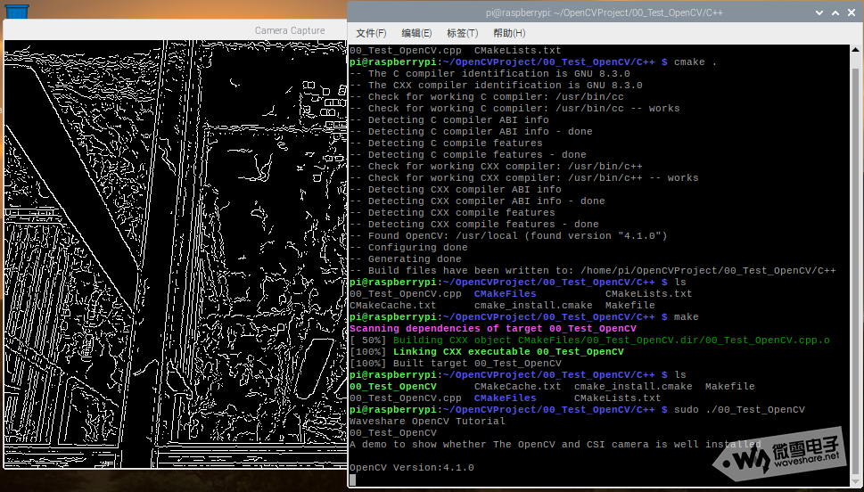

配置基础环境¶
1. 烧录系统¶
2. 基础设置¶
2.1 把目录扩展到整个TF卡¶
本次搭建OpenCV开发环境，至少选择16G的TF卡，为了充分利用TF的存储空间，需要将TF卡空间扩展到整个TF卡。
在命令行输入命令，进入树莓派配置界面，用上下左右切换光标位置。
sudo raspi-config
2.2 开启摄像头¶
作为开源计算机视觉库，主要进行图像处理，对摄像头图像数据进行处理是主要需求，因此，开启摄像头是很有必要的。
2.2.1 启用摄像头¶
sudo raspi-config
进入Interfacing Options->Camera->Yes，即可启用摄像头。
检测摄像头是否正常，可以使用以下命令进行检测：
raspivid -t 0 -cs 0
2.2.2 准备视频流设备¶
在OpenCV中，若要读取摄像头数据，需要开启v4l2(video for linux 2)，开启后，摄像头设备文件为/dev/video0，OpenCV将从该文件中读取视频流文件。
开启方法如下:
sudo vim /etc/modules
在末尾添加一行：
bcm2835-v4l2
2.3 更换软件源¶
鉴于国内网络环境下载各大镜像，软件包速度慢的问题，需要更换软件源，以防下载慢，且在本教程中，统一更换为清华源。
2.3.1 更换树莓派软件源¶
包括系统源与系统更新源，操作方法：
# 编辑 `/etc/apt/sources.list` 文件，删除原文件所有内容，用以下内容取代：
deb http://mirrors.tuna.tsinghua.edu.cn/raspbian/raspbian/ buster main non-free contrib
deb-src http://mirrors.tuna.tsinghua.edu.cn/raspbian/raspbian/ buster main non-free contrib
# 编辑 `/etc/apt/sources.list.d/raspi.list` 文件，删除原文件所有内容，用以下内容取代：
deb http://mirrors.tuna.tsinghua.edu.cn/raspberrypi/ buster main ui
2.3.2 更换pip软件源¶
为加速Python pip安装速度，特更改Python软件源，操作方法：
pip install pip -U
pip config set global.index-url https://pypi.tuna.tsinghua.edu.cn/simple
3 安装OpenCV所需要的库¶
3.1 安装numpy¶
sudo pip3 install numpy
3.2 安装OpenCV所需的依赖¶
sudo apt-get install build-essential git cmake pkg-config -y
sudo apt-get install libjpeg8-dev -y
sudo apt-get install libtiff5-dev -y
sudo apt-get install libjasper-dev -y
sudo apt-get install libpng12-dev -y
sudo apt-get install libavcodec-dev libavformat-dev libswscale-dev libv4l-dev -y
sudo apt-get install libgtk2.0-dev -y
sudo apt-get install libatlas-base-dev gfortran -y
5. 配置Cmake¶
Cmake是一款跨平台的编译工具，经过配置，可输出适配于树莓派平台的Makefile
cd /home/pi/Downloads/opencv-4.1.0
mkdir build
cd build
配置Cmake，执行以下命令：
cmake -D CMAKE_BUILD_TYPE=RELEASE \
-D CMAKE_INSTALL_PREFIX=/usr/local \
-D INSTALL_C_EXAMPLES=ON \
-D INSTALL_PYTHON_EXAMPLES=ON \
-D OPENCV_EXTRA_MODULES_PATH=/home/pi/Downloads/opencv-4.1.0/opencv_contrib-3.4.0/modules \
-D BUILD_EXAMPLES=ON \
-D WITH_LIBV4L=ON \
-D PYTHON3_EXECUTABLE=/usr/bin/python3.7 \
-D PYTHON_INCLUDE_DIR=/usr/include/python3.7 \
-D PYTHON_LIBRARY=/usr/lib/arm-linux-gnueabihf/libpython3.7m.so \
-D PYTHON3_NUMPY_INCLUDE_DIRS=/usr/lib/python3/dist-packages/numpy/core/include \
..
注意，以上命令需要根据您具体的软件环境进行修改，否则很可能报错。
其中：
* CMAKE_BUILD_TYPE=RELEASE \ 代表编译类型为发行版本
* CMAKE_INSTALL_PREFIX=/usr/local \ 安装路径
* INSTALL_C_EXAMPLES=ON \ C demo
* INSTALL_PYTHON_EXAMPLES=ON \ Python demo
* OPENCV_EXTRA_MODULES_PATH=/home/pi/Downloads/opencv-4.1.0/opencv_contrib-3.4.0/modules \ OpenCV Contrib路径
* BUILD_EXAMPLES=ON \ 编译demo
* WITH_LIBV4L=ON \ 开启Video for Linux
* PYTHON3_EXECUTABLE=/usr/bin/python3.7 \ Python3路径
* PYTHON_INCLUDE_DIR=/usr/include/python3.7 \ Python3 include文件夹
* PYTHON_LIBRARY=/usr/lib/arm-linux-gnueabihf/libpython3.7m.so \ Python3库
* PYTHON3_NUMPY_INCLUDE_DIRS=/usr/lib/python3/dist-packages/numpy/core/include \ Python3 Numpy安装路径
* ..
7. 安装¶
sudo make install
8. 测试是否安装完成¶
测试包括Python及C++的测试，用到了摄像头及简单的OpenCV处理函数。
8.1 Python3：¶
#!/usr/bin/env python
'''
Waveshare OpenCV Tutorial
00_Test_OpenCV.py
A demo to show whether The OpenCV and CSI camera is well installed
'''
import numpy as np
import cv2
def main():
print("OpenCV Version:{}".format(cv2.__version__))
# 0: use CSI camera,1：use USB camera
cap = cv2.VideoCapture(0)
if(not cap.isOpened()):
print("can't open this camera")
while(True):
ret, FrameImage = cap.read()
if ret == True:
# change to gray image
GrayImage = cv2.cvtColor(FrameImage, cv2.COLOR_BGR2GRAY)
# blur the image
BlurImage = cv2.blur(GrayImage,(7,7))
# use canny to detect contour
CannyImage = cv2.Canny(BlurImage,3,9)
# show the image
cv2.imshow('Camera Capture',CannyImage)
#Press Q to quit
if (cv2.waitKey(1)) == ord('q'):
cap.release()
break
else:
break
if __name__ == '__main__':
print(__doc__)
main()
# Release resource
cv2.destroyAllWindows()
8.2 C++:¶
#include<iostream>
#include<opencv2/opencv.hpp>
#include<opencv2/highgui/highgui.hpp>
#include<opencv2/imgproc/imgproc.hpp>
using namespace std;
using namespace cv;
int main()
{
cout << "Waveshare OpenCV Tutorial"<< endl;
cout << "00_Test_OpenCV"<cout << "A demo to show whether The OpenCV and CSI camera is well installed" <cout << endl;
cout << "OpenCV Version:" << CV_VERSION << endl;
// 0: use CSI camera,1：use USB camera
VideoCapture cap(0);
if(!cap.isOpened())
{
cout<<"can't open this camera"<return -1;
}
Mat FrameImage,GrayImage,BlurImage,CannyImage;
while(1)
{
cap>>FrameImage;
//Change to gray image
cvtColor(FrameImage,GrayImage,COLOR_BGR2GRAY);
//blur the image
blur(GrayImage,BlurImage,Size(7,7));
//use canny to detect contour
Canny(BlurImage,CannyImage,3,9);
//show the image
imshow("Camera Capture",CannyImage);
//Press Q to quit
if(char(waitKey(1)) == 'q')
{
break;
}
}
return 0;
}
CMakeLists.txt:
cmake_minimum_required(VERSION 3.0)
project(00_Test_OpenCV)
find_package(OpenCV REQUIRED)
add_executable(00_Test_OpenCV 00_Test_OpenCV.cpp)
target_link_libraries(00_Test_OpenCV ${OpenCV_LIBS})
编译并运行：
